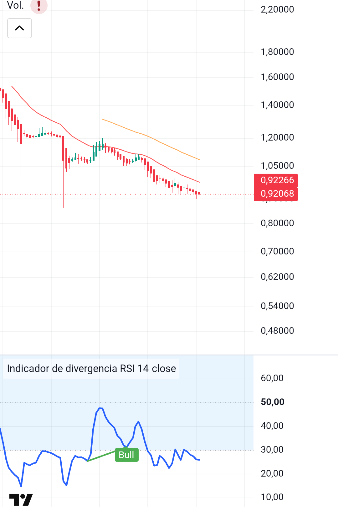
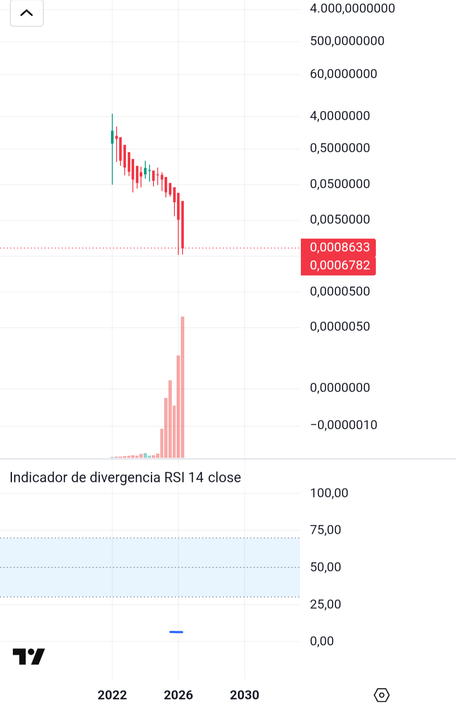

One dollar.
Two euros.
USD2EUR is a simple meme: when trust leaves Europe, the euro stops looking like money and starts looking like another institutional shitcoin.
The euro is not collapsing like a stone because the dollar is also sick. But against stronger references, the pattern is already there.
This site is a market thesis, a political accusation, and a chart-watching experiment. No roadmap. No utility. Only the thesis.
Two charts. Same smell.
One chart is EUR/CHF. The other is ACA/USD from Acala, a broken DeFi network chart. Different worlds, almost the same visual language: slow bleed, failed rebounds, lower highs.


The thesis
Europe’s political machine burns trust faster than the ECB can print comfort. Industry weakens. Energy gets politicized. Regulation replaces production. War turns into balance-sheet poison.
The frozen Russian reserves, around $300 billion in the public debate, are the symbolic line: once assets can become political collateral, foreign capital asks the only rational question — why hold European claims?
More EU credit for the conflict in Ukraine, under the pretext of saving democracy and freedom, which is nothing more than Pareto 80/20. The corrupt concubinage within Europe itself keeps 80%, while 20% goes toward destruction until the last Ukrainian.
The US dollar operates on the blockchain, giving it room to break away from the euro. Perhaps the Swiss franc will emerge the winner!
If buyers stop trusting European assets and European debt, EUR does not need a crash headline. It can bleed like every other failed token.
Why USD2EUR exists
Token
Name: USD2EUR
Symbol: USD2EUR
Chain: Solana / pump.fun
Contract: soon
Disclaimer
USD2EUR is a meme token built around a macro thesis. It is not financial advice, not an investment recommendation, and not a promise of profit. Do your own research.